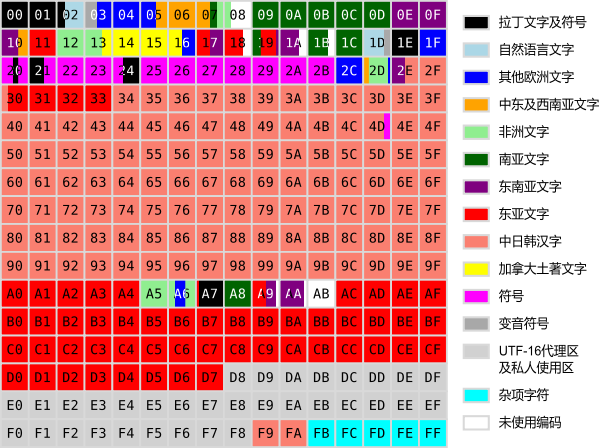

转义字符串（Escape Sequence[1]），又简称为Universal Multiple-Octet Coded Character Set（Unicode，UCS）编码转义，字符实体（Character Entity[2]）分成三部分：第一部分是一个&符号，英文叫ampersand；第二部分是实体（Entity）名字或者是#加上实体（Entity）编号；第三部分是一个分号。
HTML 4.01 支持 ISO 8859-1 (Latin-1) 字符集，也就是本文下面Unicode字符列表中的U+00A0-00FF 拉丁文补充1。
| Unicode字符值 | 转义序列 | 含义 | 类别 |
|---|---|---|---|
| \u0008 | \b | Backspace | |
| \u0009 | \t | Tab | 空白 |
| \u000A | \n | 换行符（换行） | 行结束符 |
| \u000B | \v | 垂直制表符 | 空白 |
| \u000C | \f | 换页 | 空白 |
| \u000D | \r | 回车 | 行结束符 |
| \u0020 | 空格 | 空白 | |
| \u0022 | \" | 双引号 (") | |
| \u0027 | \' | 单引号 (') | |
| \u005C | \ | 反斜杠 () | |
| \u00A0 | 不间断空格 | 空白 | |
| \u2028 | 行分隔符 | 行结束符 | |
| \u2029 | 段落分隔符 | 行结束符 | |
| \uFEFF | 字节顺序标记 | 空白 |
在Web前端开发中常会遇到\uXXXX格式表示的字符，这里有一个解码的实现代码：
var test = "你好，'hello world'。";
function decode(s) {
return unescape(s.replace(/\\(u[0-9a-fA-F]{4})/gm, '%$1'));
}
function encode1(s) {
return escape(s).replace(/%(u[0-9A-F]{4})|(%[0-9A-F]{2})/gm, function($0, $1, $2) {
return $1 && '\\' + $1.toLowerCase() || unescape($2);
});
}
console.log(encode1(test))
==> "\u4f60\u597d\uff0c'hello world'\u3002"
这里的encode1函数并没有将所有字符完全解码，所以还可以参考另一种解码思路：
var test = "你好，'hello world'。",
str = "";
for( i=0; i<test.length; i++ ){
var temp = test.charCodeAt(i).toString(16);
str += "\\u"+ new Array(5-String(temp).length).join("0") +temp;
}
console.log (str)
==> '\u4f60\u597d\uff0c\u0027\u0068\u0065\u006c\u006c\u006f\u0020\u0077\u006f\u0072\u006c\u0064\u0027\u3002'
Unicode（统一码、万国码、单一码）是计算机科学领域里的一项业界标准,包括字符集、编码方案等。Unicode 是为了解决传统的字符编码方案的局限而产生的，它为每种语言中的每个字符设定了统一并且唯一的二进制编码，以满足跨语言、跨平台进行文本转换、处理的要求。1990年开始研发，1994年正式公布。[3]
基本多文种平面（Basic Multilingual Plane, BMP[4]），或称第零平面或零号平面（Plane 0），是Unicode中的一个编码区段。编码从U+0000至U+FFFF，每个写着数字的格子代表256个码点。

详细的unicode编码列表可以参考我整理的unicode 列表（由于内容较多，而我又是在前端浏览器上加载marked.js[5]进行渲染markdown的，所以可能页面会加载很慢）。